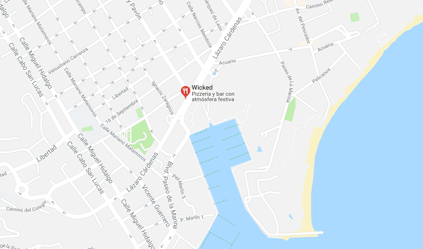

<!--
  Generated template for the ContactPage page.

  See http://ionicframework.com/docs/components/#navigation for more info on
  Ionic pages and navigation.
-->
<ion-header>

  <ion-navbar color="dark">
    

    <button ion-button menuToggle>
      <ion-icon name="menu"></ion-icon>
    </button>
    <ion-title>Contact</ion-title>

  </ion-navbar>

  <ion-card>



    <ion-fab right top>
      <button ion-fab>
        <ion-icon name="pin"></ion-icon>
      </button>
    </ion-fab>
  
    <ion-item>
      <ion-icon name="wicked" item-start large></ion-icon>
      <h2>Wicked Pizza</h2>
      <p>Av. Lázaro Cárdenas #23410, Centro,</p>
        <p> 23450 Cabo San Lucas, B.C.S.</p>
      <p>624 35 80 210</p>
    </ion-item>

  </ion-card>
  

</ion-header>


<ion-content padding>

</ion-content>
